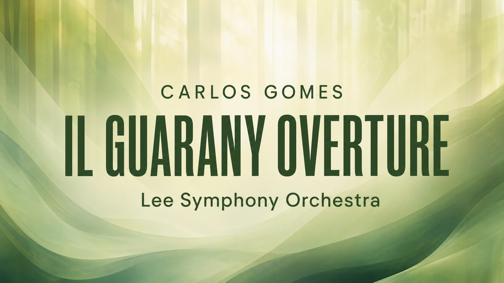
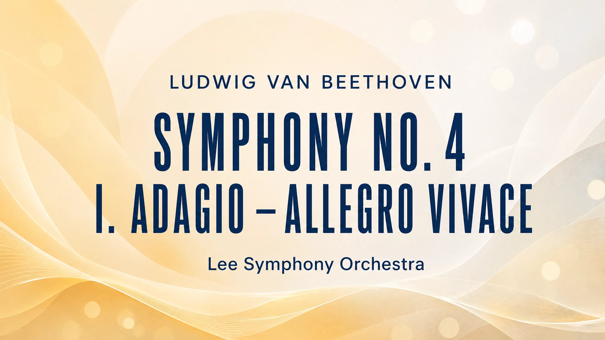
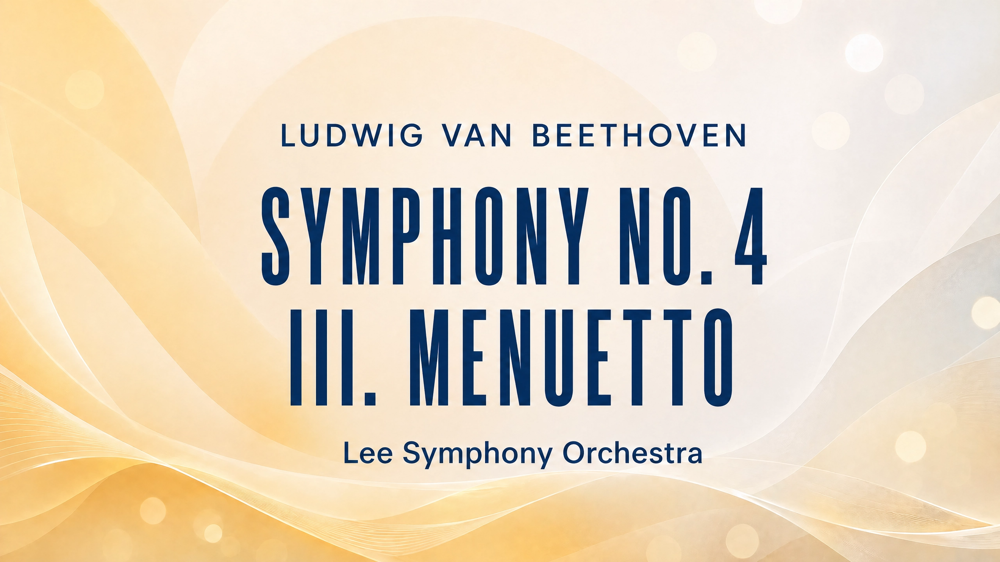
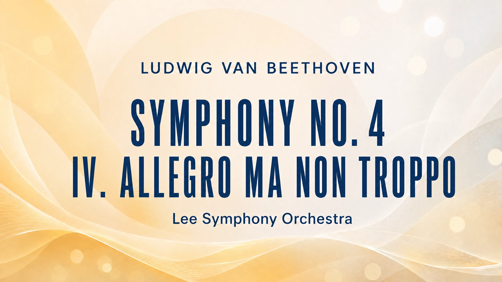
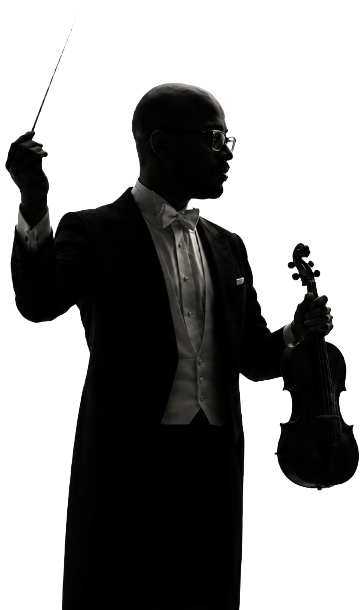

Performances
Violin


Conducting









Dr. Leonardo Rosario is an accomplished violinist, conductor, and educator, currently serving as Director of the Symphony Orchestra and Assistant Professor of Strings at Lee University, where he teaches undergraduate and graduate students in violin, viola, and conducting.
Leonardo began his violin studies with Sibila Schelin, later continuing with Cecilia Guida and Ayrton Pinto. He has participated in masterclasses with distinguished artists including Leon Spier and Lorenz Nasturica, and Gerardo Ribeiro.
From 2003 to 2005, he was a member of the Youth Orchestra of the Americas (YOA), serving as principal second violin during its inaugural season and touring across nine countries in North, Central, and South America.
In 2008, Leonardo earned his Master’s degree with full scholarship at the Boston Conservatory, studying with Irina Muresanu. During this time, he appeared as soloist with the Conservatory Orchestra on two occasions, performing Brahms’s Violin Concerto and Beethoven’s Triple Concerto.
Upon returning to Brazil, Leonardo joined the Minas Gerais Philharmonic Orchestra (2008–2015), founded and managed the Camerata Pampulha Chamber Group. He later returned to the United States to complete his Doctor of Musical Arts at the University of North Carolina–Greensboro.
In 2020, Leonardo was appointed Assistant Professor of Music, Director of the Strings Area, and Director of Orchestras at Kansas Wesleyan University (KWU). Over five years, he expanded the orchestra program and frequently conducted for the Kansas Music Educators Association.
Vestibulum purus quam, scelerisque ut, mollis sed, nonummy id, metus. Nullam accumsan lorem in dui. Cras ultricies mi eu turpis hendrerit fringilla. Vestibulum ante ipsum primis in faucibus orci luctus et ultrices posuere cubilia Curae; In ac dui quis mi consectetuer lacinia. Nam pretium turpis et arcu. Duis arcu tortor, suscipit eget, imperdiet nec, imperdiet iaculis, ipsum.
Violin
Conducting



